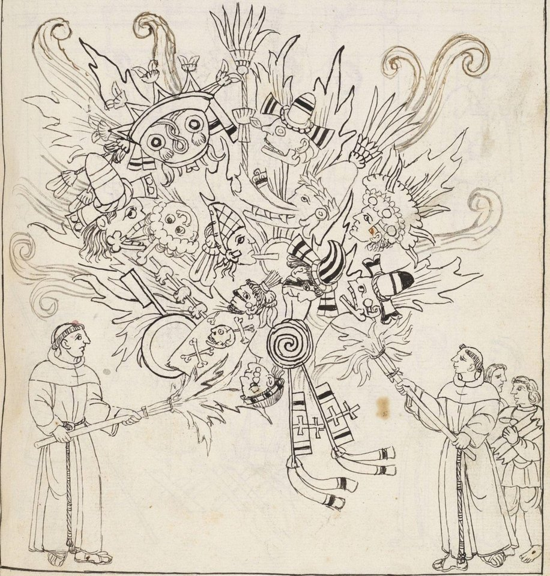
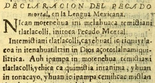
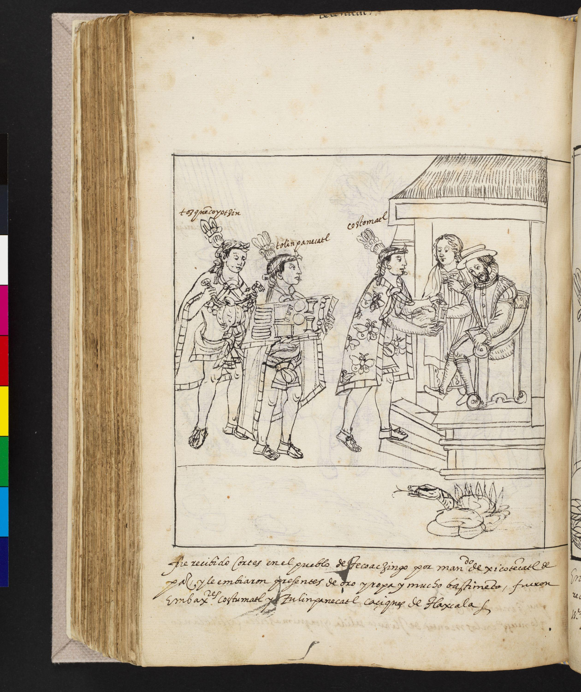
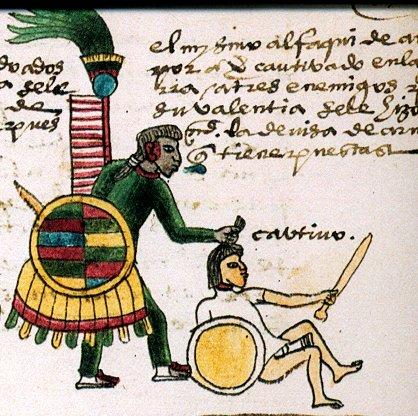
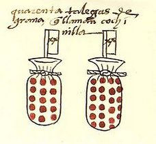
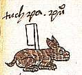
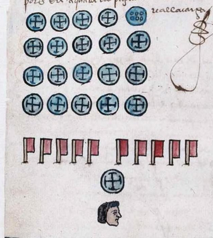
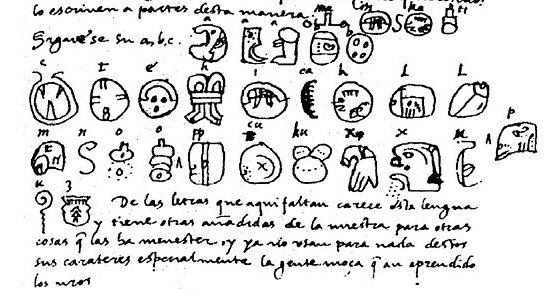

Nepantlah
Übersetzung und Kolonialisierung
Jürgen Stowasser
Kultur- und Sozialanthropologie/Univ. Wien
23. 10. 2025
Radical Translation
The recovery of a man’s current language from his currently observed responses is the task of the linguist who, unaided by an interpreter, is out to penetrate and translate a language hitherto unknown. All the objective data he has to go on are the forces that he sees impinging on the native’ s surfaces and the observable behavior, vocal and otherwise, of the native. [..] And yet the linguist apparently ends up with native ’meanings’ in some quite unrestricted sense; purported translations, anyway, of all possible native sentences.
—W.V. Quine, Word and Object (1960)
[El rey de aquella isla] y su ayo y consejeros llevan grande pena porque no me entendían, ni yo a ellos. Con todo, le cognoscí que me dixo que si me compliese algo de aquí, que toda la isla estava a mi mandar. Yo enbié por unas cuentas mías adonde por un señal tengo un excelente de oro en que están esculpidos Vuestras Altezas mandavan y señoreavan todo lo mejor del mundo, y que no avía tan grandes príncipes, y le mostré las vanderas reales y las otras de la Cruz, de que él tuvo en mucho, ”y ¡qué grandes señores serían Vuestras Altezas!”, dezía él contra sus consejeros, ”pues de tal lexos y del cielo me avían enbiado hasta aquí sin miedo”..
—Cristóbal Colón, Diario de a bordo, Martes, 18 de Diciembre
Forschungsfrage, Quellenkorpus, Methodik
●
Forschungsfrage
Welche Rolle spielen Übersetzungsfehler in den frühkolonialen Quellen, sind spezifische Muster des Scheiterns feststellbar und welche methodologischen Schlussfolgerungen ergeben sich daraus?
- ❍ Bei Übersetzungsfehlern, so lautet meine Arbeitshypothese, handelt es sich selten um zufällige Lapsus, insbesondere dann, wenn diese Fehler in anderen Quellen wiederholt werden oder unabhängig voneinander bei verschiedenen Autor*Innen vorkommen.
- ❍ Übersetzungsbegriff schließt Dolmetschen und intersemiotische Übersetzungen mit ein.
Teilfragen:
- ➔ Können die zahlreichen Fehlübersetzungen in den Quellen durch bestimmte Kategorien des Missverstehens erklärt werden?
- ➔ Welche praktischen Folgen resultierten daraus, beispielsweise im Kolonialrecht? Wie sind Übersetzungsfehler vom Spanischen ins Nahuatl im Kontext der kolonialen Machtdynamik zu bewerten?
- ➔ Warum wurden manche Fehlübersetzungen von der Forschung lange Zeit nicht als solche erkannt und sogar perpetuiert? Welche methodologischen Schlussfolgerungen ergeben sich, beispielsweise für eine dekoloniale Quellenkritik?
Quellenkorpus
- ✗ Alphabetschriftliche Quellen in Nahuatl, Spanisch und Latein
- ✗ Handschriften im Tlahcuilōlli-Schriftsystem ("Códices")
- ✗ Glossen
Der mesoamerikanische Palimpsest

Diego Muñoz Camargo, Historia de Tlaxcala, 242r (ca. 1581–84)
Manuskript, ca. 1581-1584 (University of Glasgow, Ms Hunter 242
Usaba también esta gente de ciertos caracteres o letras con las cuales escribían en sus libros sus cosas antiguas y sus ciencias, y con ellas [...] entendían sus cosas y las daban a entender y enseñaban. Hallámosles gran número de libros de estas sus letras, y porque no tenían cosa en que no hubiese superstición y falsedades del demonio, se los quemamos todos, lo cual sintieron a maravilla y les dio mucha pena.
—Diego de Landa (O.F.M.), Relación de las cosas de Yucatán (de Landa 1994: 185)
Nepantlah - Zwischen Sprachen, Kulturen und Identitäten
Prehendiendo yo á un indio de ciertas cosas en particular de que había andado arrastrado recogiendo dineros con malas noches y peores dias al cabo de haber allegado tanto dinero y con tanto y trabajo hace una boda y convida á todo el pueblo y gástalo todo y así riñendole el mal que había hecho me respondió: Padre no te espantes pues todavía estamos nepantla como entendiese lo que quería decir por aquel bocablo y metáfora que quiere decir estar en medio torné á insistir me dijese que medio era aquel en que estaban me dijo que como no estaban aun bien arraigados en la fé que no me espantase de manera que aun estaban neutros que ni bien acudían á la una ley ni á la otra ó por mejor decir que creían en Dios y que juntamente acudían á sus costumbres antiguas ritos del demonio y esto quiso decir aquel en su abominable escusa de que aun permanecían en medio y estaban neutros.
—Diego Durán, OP, Historia de las Indias de Nueva España e Islas de Tierra Firme (Durán 1995 II: 243)
Nepantlah
In a constant state of mental nepantilism, an Aztec word meaning torn between ways, la mestiza is a product of the transfer of the cultural and spiritual values of one group to another. Being tricultural, monolingual, bilingual, or muItilingual, speaking a patois, and in a state of perpetual transition, the mestiza faces the dilemma of the mixed breed: which collectivity does the daughter of a darkskinned mother listen to?
—Gloria Anzaldúa, Borderlands/La Frontera: The New Mestiza (Anzaldúa 1991: 78)
Сущность полифонии именно в том, что голоса здесь остаются самостоятельными и, как таковые, сочетаются в единстве высшего порядка, чем в гомофонии. Если уж говорить об индивидуальной воле, то в полифонии именно и происходит сочетание нескольких индивидуальных воль, совершается принципиальный выход за пределы одной воли. Можно было бы сказать так: художественная воля полифонии есть воля к сочетанию многих воль, воля к событию.
—Михаи́л М. Бахти́н (Michail M. Bachtin), Проблемы поэтики Достоевского (1963; 2002: 28f)
Koloniale Sprachpolitik
● ●
Koloniale Sprachpolitik
[..] una cosa hállo sáco por conclusión muy cierta: que siempre la lengua fue compañera del imperio y de tal manera lo siguió, que junta mente començaron, crecieron y florecieron, y después junta fue la caida de entrambos.
—Antonio de Nebrija, Gramática de la lengua castellana, 1492 (Nebrija 1989: 113f)
Popoluca/Popoloca
") https://www.inali.gob.mx/clin-inali/html/v_popoloca.html
https://www.inali.gob.mx/clin-inali/html/v_popoloca.htmlAunque ha habido españoles curiosos que han escrito las repúblicas del Nuevo Mundo, como la de México y la del Perú [...] no ha sido con la relación entera que de ellos se pudiera dar, que lo he notado [..] como natural de la ciudad del Cuzco, que fue otra Roma en aquel Imperio, tengo más larga y clara noticia que hasta ahora los escritores han dado. [...] que mi intención no es contradecirles, sino servirles de comento y glosa y de intérprete en muchos vocablos indios, que, como extranjeros en aquella lengua, interpretaron fuera de la propriedad de ella, según que largamente se verá en el discurso de la historia, la cual ofrezco a la piedad del que la leyere [...].
—Inca Garcilaso de la Vega, Comentarios reales de los Incas (1609; 1991: 5)
Nahuatl/Spanisch
● ● ●
Übersetzungsfehler - Kategorien
- ✗ Universalismus
- ✗ Auslassungen und Streichungen
- ✗ Ontologische Differenz und Klassifikationsfehler
- ✗ Übersetzungsstrategien
- ✗ Décalage
A estos hongos llaman en su lengua teunanacatlth [sic!], que quiere decir carne de dios, o del demonio que ellos adoraban; y de la dicha manera con aquel amargo manjar su cruel dios los comulgaba.
—Fray Toribio Motolinía (OFM), Historia de los indios de la Nueva España (Motolinía 1995: 20)

Alonso de Molina, OFM: Doctrina christiana, y cathecismo, en lengua mexicana. Mexico: Por la Viuda de Bernardo Calderon, 1675. [Manuskript <1585]
Streichungen
| Nahuatl | Ü | Spanisch | Ü |
|---|---|---|---|
| nancioalo, tachioalo | ist (wie) eine Mutter, wie ein Vater | es padre y amparo | ist Vater und Schutz |
| nenantilo, netatilo | ...como madre, como padre | [les] favorece como padre | bevorzugt sie wie ein Vater |
(Sahagún 1961, lib. X, cap. 16, p. 60)
Übersetzungsstrategien
[...] nos subimos en un alto árbol para considerar mejor lo que era, y as de saber que vimos una casa en el agua, de donde salen unos hombres blancos, blancos de rostro y manos y tienen las barbas muy largas y pobladas y sus bestidos son de todas colores [...].
— Diego Durán, OP: Historia de las Indias e Islas de la Tierra Firme (Durán cap. LXIX, 1995 I: 576)
Reziprozität
Su yunta mismo Dios se la dio - entonces, Adán formo, pues, su aradito. Le dio esa idea como iba a trabajar. Su yunta Dios se la dio...que era una raya pero se va cerrando y otra igual, se cierra [repeats the last line several times while pantomiming Adam’s futile attempts to plough]. Entonces [Adán] dice: ¡Eva, Eva, ven! Eva, se cierra la tierra, se cierra, le dice. Si, [Eva] dice, no se deja, no quiere dar de comer pero ahorita yo voy a hablar con la tierra, ahorita, dice, que se abra pues la tierra. Tierra, [Eva] dice, ¡danos de comer! Dice: Tierra, deja que te trabajemos, dejate, dejate, damos de ese fruto pa’que comamos y el dia que nos morimos entonces tú nos vas a a comer. Tú nos vas a comer. Así pasó, así era. Y hasta la fecha todavía no se cierra cuando trabajmos, si, ahora que hay elotes, calabazas, tenemos que comer, hasta hijitos tenemos.
— (Ameyaltepec, m, 75y, 1998)
Intersemiotische Übersetzung
● ● ● ●
Intersemiotische Übersetzung
Diego Muñoz Camargo, Historia de Tlaxcala, 242r (ca. 1581–84)
Manuskript, ca. 1581-1584 (University of Glasgow, Ms Hunter 242
Intersemiotische Übersetzung

Diego Muñoz Camargo, Historia de Tlaxcala, 252r (ca. 1581–84)
Manuskript, ca. 1581-1584 (University of Glasgow, Ms Hunter 242



Intersemiotische Übersetzung

Codex Osuna, 14v (1563)
Diego de Landas "Alphabet"

Codex Osuna, 14v (1563)
Conclusio
● ● ● ● ●
Conclusio
- ✗ Fokus auf Fehlübersetzungen, deren Ursachen und Folgen
- ✗ Fehler in der Übersetzung ist selten ein nur zufällig entstandener Fehler, sondern beruht auf Vorannahmen und Stereotypen.
- ✗ Dies gilt besonders dann, wenn ein Fehler in anderen Quellen wiederholt wird und von der Forschung nicht als solcher erkannt wird.
- ✗ Kategorien von Übersetzungsfehlern: Vermeintliche Universalität christlich-europäischer Vorstellungen, Übersetzungsstrategien, Décalage
Tlahcuilōlli - Intersemiotische Übersetzung
- ✗ Semiotischer Kolonialismus
- ✗ Wandel im europäischen Schriftdiskurs v.a. ab der Aufklärung: Der "Entwicklungsgrad" einer Schrift wird als Indikator kultureller Entwicklung interpretiert
- ✗ Texte in mesoamerikanischen Schriftsystemen werden in der Forschung oft als Bildquellen missverstanden – mit weitreichenden Implikationen (keine Schriftquellen = keine Geschichte)
- ✗ Effekt der Kolonialisierung auf Schrift/Schreiben als materielle Praxis (u.a. Verbot des āmatl-Papiers)
Que siempre la lengua fue compañera del imperio...
- ✗ Vernichtung des prähispanischen Schriftkorpus: Auslöschung des kulturellen Gedächtnis, radikalste und zerstörerischste Form der Nicht-Übersetzung
- ✗ Übersetzung als soziale Praxis innerhalb der kolonialen Herrschaftsstrukturen
- ✗ „Kolonialisierte“ werden in den Quellen als Akteur*innen sichtbar
- ✗ Übersetzung im kolonialen Kontext als Form epistemischer Gewalt: Kolonialrecht, Umbennung lokaler Ortsnamen, Marginalisierung anderer indigener Sprachen zugunsten von Nahuatl im offiziellen Sprachgebrauch.
Methodologische Implikationen und Desiderata
- ✗ Übersetzungsanalyse als Bestandteil der Quellenkritik
- ✗ Rekonstruktion polyphoner Textstrukturen kann neue Zugänge zu den Quellen ermöglichen
- ✗ Analyse von Übersetzungsfehlern in kolonialen Quellen als potentieller Ausgangspunkt für die Dekonstruktion kolonialer Narrative und als Beitrag zur epistemischen Dekolonialisierung ethnohistorischer und historischer Forschung

Tlazohcāmati!